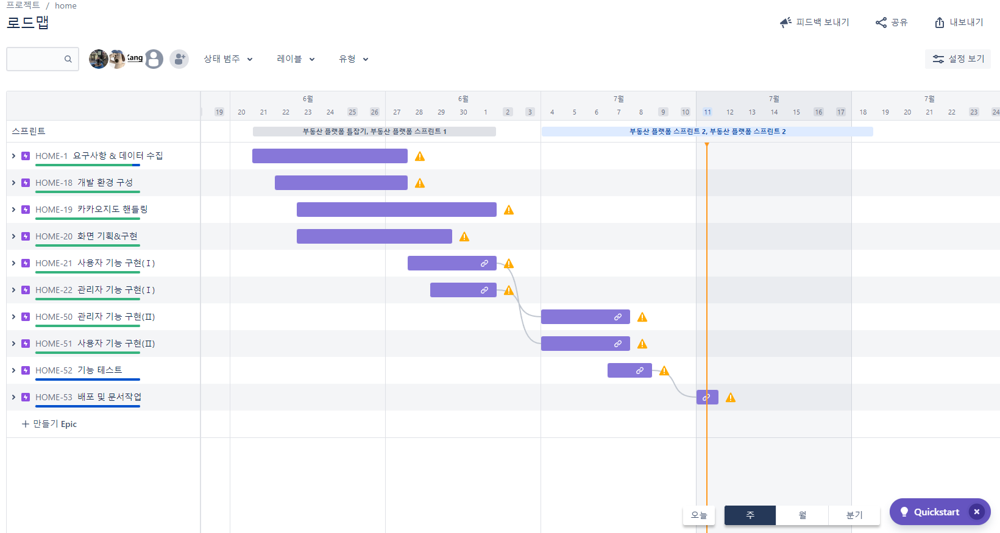

ingeunjumin Team Project
대전 부동산 매매&청약 플랫폼
해당 주제를 선정한 이유?
최근 최대 이슈인 부동산 관련하여 고객들에게 실용적인 서비스를 제공하고자
누구나 쉽게 정보를 알 수 있는 부동산 플랫폼을 진행하게 되었습니다.
대전 부동산 매매&청역 프로젝트는 대전 아파트 실시간 매매가격과 청약
정보를 지도로 한눈에 볼 수 있는 플랫폼입니다.
개발기간은 2022년 06월 28일 ~ 2022년 07월 11일까지 약 3주간 진행하였고,
개발 인원은 총 3명(프론트1, 백엔드2)이고 그 중 데이터 수집 및
관리자페이지 기능구현을 맡아 진행 하였습니다.
"팀프로젝트 발표 내용 및 간단 기능 설명 github click"
* 팀 프로젝트를 마무리로 느낀점
1. 7개월간 배운걸 총 사용하여 git으로 프로젝트를 관리하며 개인프로젝트때 느끼지 못한 commit 충돌 이슈를 느낌! 팀원 소통 중요성 느낌, 요구사항 분석, 일정 중요성 느낌.
2. 스프린트의 중요성과 clean code의 중요성을 느낌.
3. 다양한 종류의 프로젝트를 진행해 보는것이 실력향상과 많은 기술들을 경험해 보는것이 중요하다는 것을 느낌.
4. 필요한 정보, 기술들에 대한 검색 방법 or 사용 방법을 많이 알아감.
* 보완점
1. 반응형 구현하지 못함 이런 저런 기능이 있었는데 일정으로 인해 구현하지 못함.
2. coolSMS => 유료서비스로 인해 서비스 제공 제한.
3. React 사용 개념 상태 미흡.
4. 난방방식 / 동수 /세대수/ 관리방식 주거전용면적 -> 임시 데이터에서 실제 데이터로 교체 예정
해당 프로젝트는 "관리자페이지","사용자페이지"에서 확인할 수 있으며, ID => root , password => root 입니다. 프로젝트 소스는 "github source"에서 확인할 수 있습니다.
Technologies:
- - HTML5
- - CSS5
- - JavaScript
- - jQuery
- - AJAX
- - Git
- - Restful API
- - Spring Boot(2.6.7v)
- - Spring Security
- - Spring poi
- - JAVA(12.0.2v)
- - MySQL
- - MyBatis(ORM)
- - Gradle(빌드툴)
- - JSP&JSTL(템플릿엔진)
- - Eclipse(IDE)
- - VSCode
- - AWS EC2(CentOS) or Beanstalk
- - AWS RDS(MySQL)
- - KAKAO MAP API
- - Open Data API
- - Web Crawling
- - Spring Boot Batch
- - JIRA
- - Post Man
사용자 페이지 기능


관리자 페이지 기능


테이블 설계도

개발 일정 그래프
